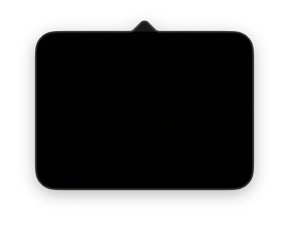
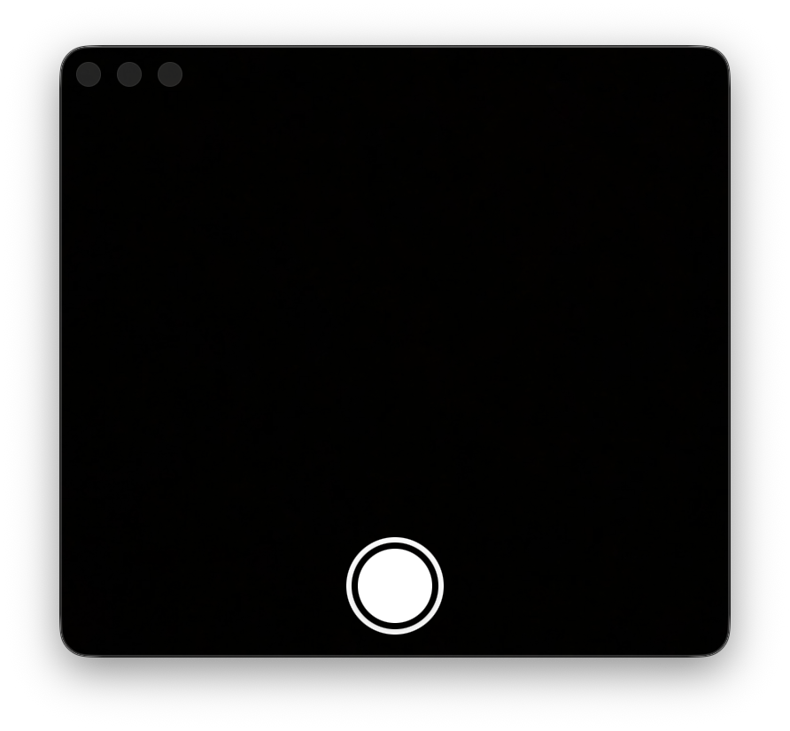

Overview
LookingGlass is a macOS application that puts a quick-access mirror in the menu bar. Hover the icon for a passive preview, click for the full popover with a shutter button, and capture goes straight into the Photos library with iCloud sync if you have it. The hand-mirror icon, drawn rather than picked from SF Symbols, is its only persistent footprint.
The "did I get spinach in my teeth" moment doesn't deserve launching Photo Booth. macOS doesn't ship a quick mirror, FaceTime is the wrong tool, and the camera that's already two inches above the screen sits unused most of the day. LookingGlass collapses that into one icon — or a hover, for the same answer with even less effort.
Why I Made This
I check my reflection a dozen times a day before meetings, calls, or stepping out, and every time I'd open Photo Booth, wait for it to launch, navigate to camera mode, and close it again. It's a five-second task wrapped in thirty seconds of overhead. The hardware is right there; the software was the bottleneck.
I also wanted something that respected privacy at the system level rather than as a promise. macOS has had an add-only Photos permission since 2020 — apps can write new assets without ever being able to read or enumerate the user's library — but most apps still ask for full access because it's the default in older code samples. LookingGlass declares only the add-only key, so the system itself enforces that the app cannot read your photos. The user sees "LookingGlass would like to add to your Photos Library", not "access", and macOS lists the app as Add Only in Settings with no toggle to escalate.
User Experience
The menu bar icon is a small hand-mirror silhouette — an outlined oval with a short handle, drawn with NSBezierPath rather than picked from SF Symbols so it reads as the app's own mark at the menu bar's tiny render size. It uses a template image so it adapts to whatever menu bar appearance the user is on, and otherwise occupies no space.
Hovering the icon drops down a 220×160 live preview — just the camera feed, no controls, no chrome. Once it appears it stays put for at least 1.5 seconds even if the cursor leaves immediately, which prevents the kind of flicker a small target would otherwise produce from natural mouse jitter. Walk away and it dismisses with a 250ms grace.
Click the icon and the full 360×320 popover takes its place: the same live feed plus a circular shutter button. Hit space or click the shutter and the screen flashes white, the photo saves, and a small "Saved to Photos" toast confirms before fading. The preview is horizontally mirrored by default so the experience matches a real mirror — left and right match what you see — and the captured photo carries the same flip, so you don't have to remember to mirror it again later.
Right-clicking the icon brings up a context menu in the same checkmark-toggle style as MediaBar: mirror image on/off, self-timer (none / 3s / 10s), camera picker (FaceTime HD plus any Continuity Camera, External, or Desk View source the system reports), a floating-window toggle, global hotkey toggle, launch-at-login, and a manual "Check for Updates…" item. Selections persist across launches via UserDefaults.
Key Features
- Three-state interaction — idle is just the icon, hover is a passive preview, click is the full tool with the shutter. Each state lives only as long as the user's attention is on it: hover dismisses on exit, the popover dismisses on outside click, and the camera session itself stops as soon as nothing is showing it.
- Privacy-first Photos integration — the bundle declares only
NSPhotoLibraryAddUsageDescription, never the read-write key, and the code only ever callsPHPhotoLibrary.requestAuthorization(for: .addOnly). The OS enforces this at the API level: even if the source tried to enumerate, fetch, or display existing photos, those calls would fail. macOS Settings shows the app as "Add Only", with no UI to grant it more. - Mirrored capture pipeline — both
AVCaptureVideoPreviewLayer.connection.isVideoMirroredandAVCapturePhotoOutput.connection(with: .video)?.isVideoMirroredare updated reactively when the user toggles the menu item, so the preview and the saved file always match. Avoids the common bug where the user sees themselves mirrored but the photo is reversed. - Detachable floating window — the right-click "Floating Mirror" toggle pops a borderless 320×280
NSWindowat.floatinglevel, withcollectionBehaviorset so it joins all spaces and survives full-screen apps.isMovableByWindowBackgroundlets the user drag it from anywhere on the surface. Useful for keeping a peripheral mirror visible while working in another app, where the popover would otherwise auto-dismiss on click-outside. - Continuity Camera and external camera support —
AVCaptureDevice.DiscoverySessionenumerates.builtInWideAngleCamera,.external,.continuityCamera, and.deskViewCamera(with#availablefallbacks for older macOS). The selected device persists in UserDefaults byuniqueID; if the previously selected camera is gone on next launch (iPhone disconnected, external unplugged), the app falls back toAVCaptureDevice.default(for: .video)rather than failing. - Global hotkey via Carbon's
RegisterEventHotKey— Apple has not shipped a Cocoa replacement for system-wide hotkeys, but the Carbon API is still maintained, dependency-free, and registers ⌥⌘M as a process-owned hotkey that fires regardless of which app is frontmost. The handler is a C callback that hops back to the main thread to toggle the popover. - Launch at Login via
SMAppService— registers the bundle as a login item using macOS 13's modern API, which doesn't require the prompt-for-permission dance the olderLSSharedFileListflow needed. Gracefully no-ops on older systems via#available. - Self-timer with countdown overlay — picking 3- or 10-Second Timer replaces the immediate-shutter behavior with a one-per-second countdown rendered as a large rounded numeral over the live preview. A single
Timeron the main run loop drives a@Publishedinteger; SwiftUI re-renders the overlay automatically with a.transition(.scale.combined(with: .opacity))between numbers. - Anti-flicker hover state machine — the menu bar icon is roughly 16 points square, small enough that a steady hand on a trackpad still produces enough pixel jitter to fire
mouseEntered:/mouseExited:dozens of times per second. Once the hover preview appears, a 1.5-second minimum-show floor blocks any dismiss request from firing the close. After that minimum, the standard 250ms post-exit grace period takes over. - Update checker via the GitHub Releases API — manual "Check for Updates…" plus a once-per-day silent background check on launch. Hits
api.github.com/repos/<owner>/<repo>/releases/latest, compares the tag toCFBundleShortVersionStringwithNSString.compare(_:options: .numeric)for proper semver ordering, and surfaces a "1.0.x is available" alert with a Download button that opens the release page. Avoids the Sparkle dependency at the cost of in-place auto-install — fine for a small utility. - Hand-rolled .app bundle — no Xcode, no Package.swift, no SPM. The project compiles via
swiftcwith the right framework flags, drops the binary intoLookingGlass.app/Contents/MacOS/, copies the Info.plist, generates a PkgInfo file, and ad-hoc signs with the entitlements file. Releasing a new version is one command (./release.sh 1.0.1) — bumpsCFBundleShortVersionStringandCFBundleVersion, builds, and zips withdittofor proper macOS metadata preservation.
Screenshots



Technical Architecture
Built as a hand-rolled .app bundle that compiles with swiftc and Command Line Tools — no Xcode required. SwiftUI handles popover and window content, AppKit owns the status item, popovers, NSWindow, and tracking areas, AVFoundation manages camera capture, Combine wires camera state into the SwiftUI views, and Carbon Hot Keys provides the system-wide ⌥⌘M shortcut.
CameraManager is the source of truth for camera state. It owns the AVCaptureSession on a private serial queue and exposes @Published properties for status, mirror, timer, and selected device, all routed through DispatchQueue.main for SwiftUI updates. Capture is a one-shot: AVCapturePhotoSettings → photoOutput.capturePhoto(with:delegate:) → AVCapturePhotoCaptureDelegate.photoOutput(_:didFinishProcessingPhoto:error:) → PHPhotoLibrary.performChanges with .addOnly authorization.
AppDelegate is unusually substantial because it owns the entire menu bar lifecycle: the NSStatusItem, two popovers (hover and main), the FloatingMirrorController, the global hotkey, the outside-click monitor, and the right-click context menu. The hover state machine is implemented as a private nested HoverTracker NSObject — NSTrackingArea invokes mouseEntered: / mouseExited: on its owner via runtime selector lookup, and the Swift method signatures need the with label dropped so the generated Objective-C selectors actually match. NSResponder gets this for free via Apple's bridging metadata; a plain NSObject does not.
NSPopover is configured with .applicationDefined behavior rather than .transient. LSUIElement apps don't always receive clean resignActive events, and .transient interprets that as outside-click and dismisses the popover at unpredictable moments. .applicationDefined puts dismissal under app control: a global NSEvent.addGlobalMonitorForEvents on .leftMouseDown / .rightMouseDown closes the popover when something outside the process is clicked. The monitor only runs while the popover is visible — registered on show, removed in popoverDidClose.
Reflections
Most of the interesting work in LookingGlass turned out to be in the small interaction details, not the camera plumbing. AVFoundation handles the camera fine — the hard part was making a menu bar app that doesn't feel jittery, doesn't dismiss when you don't want it to, and stays out of the way when you do.
The single biggest time sink was the popover lifecycle for LSUIElement apps. NSPopover.transient is documented to close on outside clicks, but in practice it closes on any event the app interprets as deactivation — which for an accessory app with no Dock icon is "frequently." Switching to .applicationDefined and writing a global mouse-down monitor took ten lines; figuring out why I needed to was the days-long part.
The hover preview surfaced the same kind of issue at a smaller scale. The status bar icon is something like 16 points square, and a steady hand on a trackpad still produces enough pixel jitter to fire mouseEntered: and mouseExited: dozens of times in a second. The fix is a UI pattern more than a code one — once the preview appears, it refuses to dismiss for 1.5 seconds — and not the kind of thing you'd think to write until you've seen the alternative.
The privacy-first Photos integration felt worth the time it took. macOS exposes two Photos permissions — the older read-write "Photos Library" and the newer write-only "Photos Library Add Only" — but most apps still ask for the full version because that's the default in older code samples. Being explicit about declaring only NSPhotoLibraryAddUsageDescription means the user sees an "add to" prompt instead of "access," and macOS lists the app as Add Only in Settings, where there's no toggle to grant it more. It's a one-line change with system-enforced consequences, and most apps haven't made it.
Like MediaBar, LookingGlass does one thing — but the thing is so small that the design constraint became do nothing unless asked. A second of hover and you see yourself; a click and you can capture; otherwise the app is invisible. The hand-rolled build pipeline (no Xcode, just swiftc and a shell script) is the same idea applied to the project itself: as little machinery as possible to do exactly what's needed, no more.